IT技能
- 熟练使用并深刻理解HTML/CSS/JavaScript等Web前端技术；
- 精通jQuery工具库，熟悉Backbone框架；
- 熟练使用webpack、grunt打包工具；
- 熟练使用react、ES6；
- 对web标准，标签语义化，可用性，浏览器模式有深刻理解；
- 熟练掌握JSP/Servlet/JavaBean等开发技术；
- 了解MySQL、MongoDB数据库开发；
注: 本人对web前端开发有浓厚兴趣，对js，css，html尤为擅长。
求职意向
| 到岗时间： | 一个月内 |
| 工作性质： | 全职 |
| 希望行业： | 计算机软件；互联网/电子商务 |
| 目标地点： | 成都 |
| 期望薪水： | 16K+ |
| 目标职能： | 前端工程师；互联网软件开发工程师；网页设计/制作 |
工作经验
-
2011年7月 -- 2014年11月 成都联想软件有限公司(51-200人) 所属行业 互联网、电子商务 前端，网站页面架构，切图，编写结构良好的xhtml页面，交互脚本，后台数据接口等。 -
2014年11月 -- 至今 北京世联互动网络有限公司成都分公司(51-200人) 所属行业 计算机、通讯业 前端，网站页面架构，切图，编写结构良好的xhtml页面，交互脚本，后台数据接口等。
教育背景
2004年9月 - 2008年7月 四川师范大学获学士学位 信息与计算科学专业
C语言、C++、汇编语言、数据结构、软件工程、计算机操作系统、计算机组成原理、计算机网络原理、数据库、人工智能、计算机图形学、编译原理、计算机数值方法、数字信号处理、计算机密码学、数学建模、数学分析、高等代数、解析几何、常微分方程、离散数学、概率论、运筹学
2008年9月 - 2011年7月 四川师范大学获硕士学位 算法分析与设计专业
发表文章:
- Quality of Gene Order Calculated by Ant Colony Algorithm is Sensitive to Distance Formula, 2009 Third International Conference on Genetic and Evolutionary Computing (EI检索)
- Gene order computation using Alzheimer’s DNA microarray gene expression data and the ant colony optimization algorithm, IJDMB-17262 (SCI检索)
- Apply the Feature of Entropy Convergence of ACO to Short the Runtime of Gene Order, The Fourth International Conference on Genetic and Evolutionary Computing(EI检索)
工作经验
- 2011/7--2014/11: 联想云服务
- 软件环境： Windows
- 开发工具： Eclipse
- 项目描述： 联想云服务
- 责任描述： 负责前端所有模块的开发
-
联想云服务一期：制作基本网站
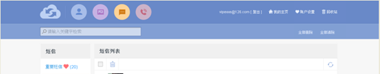主要负责页面搭建及交互效果的实现:
- 参与联系人列表展示、分页条功能实现;
- 参与短信、通话记录的展示;;
- 参与联系人列表展示、分页条功能实现;
主要遇到的问题:
- 分页条的水平对齐显示;
- 分享按钮的事件向上屏蔽;
-
联想云服务二期：header风格
负责页面搭建以及javascript交互
主要遇到的问题:
- 联系人头像上传的遮罩在IE6下会出现select标签浮在遮罩上面, 采用增加iframe的方式解决;
-
联想云服务三期：增加应用模块
主要负责APP的展示, 负责手机浏览器上应用的展示
主要遇到的问题:
- 每个应用的hover效果遮罩展示;
-
联想云服务四期：更新首页版式
主要负责首页图片轮播, 反馈页面的展示和交互
主要遇到的问题:
- 图片轮播的暂停与轮播的转换，主要用setInterval轮播, hover到导航的时候clearInterval, mouseout的时候继续轮播;
-
联想云服务五期：垃圾短信处理
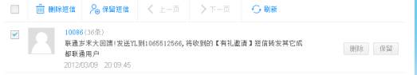主要负责列表展示和改变分页条的样式
主要遇到的问题:
- 删除按钮与保留按钮的位置定位;
- 2014/11--至今: 北京世联互动网络有限公司成都分公司
- 软件环境： Windows, Linux
- 开发工具： WebStorm, Atom, Nodepad++
- 项目描述： Naver Crash Analyzer
- 责任描述： 负责前端所有新增模块的开发
-
Webapp: 在indicator页面增加CRP/CRU
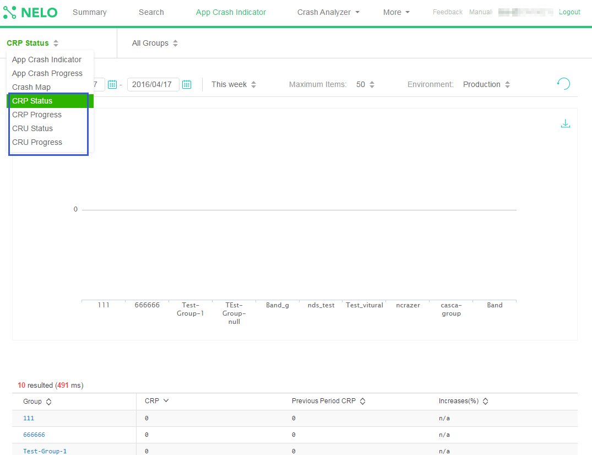负责前端所有模块的开发: 主要使用Backbone + require
-
Webapp: Mapping NDS project name to NELO project
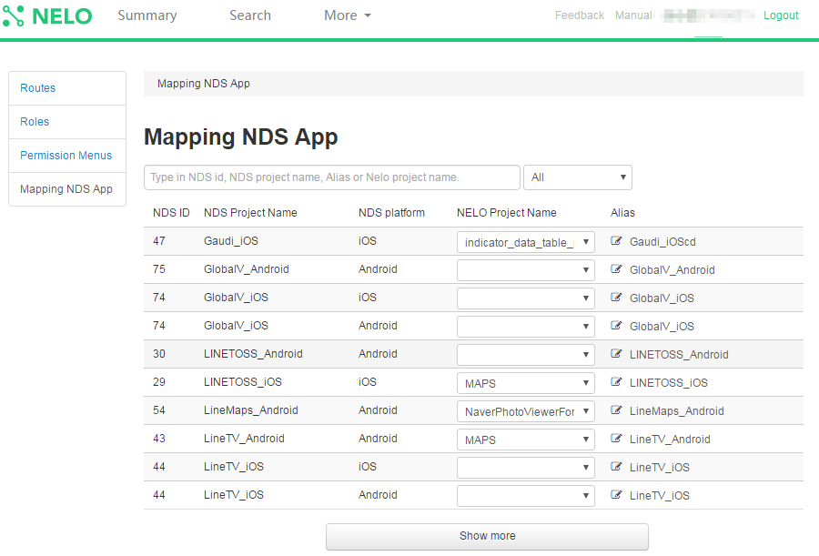负责前端所有模块的开发
-
Webapp: Improve crash config page
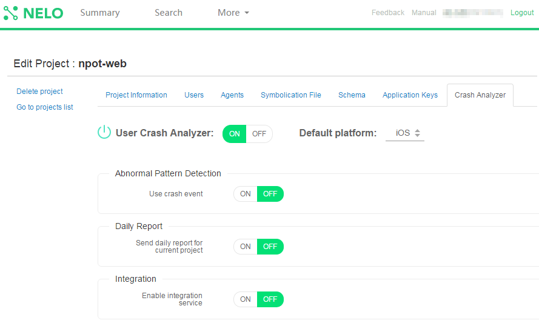负责前端所有模块的开发
-
Webapp: Add map view in ncrazer indicator
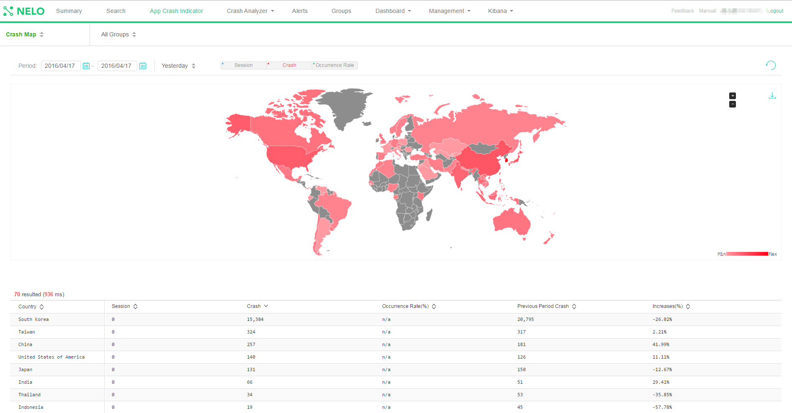负责前端所有模块的开发
-
Webapp: Abnormal pattern detector history
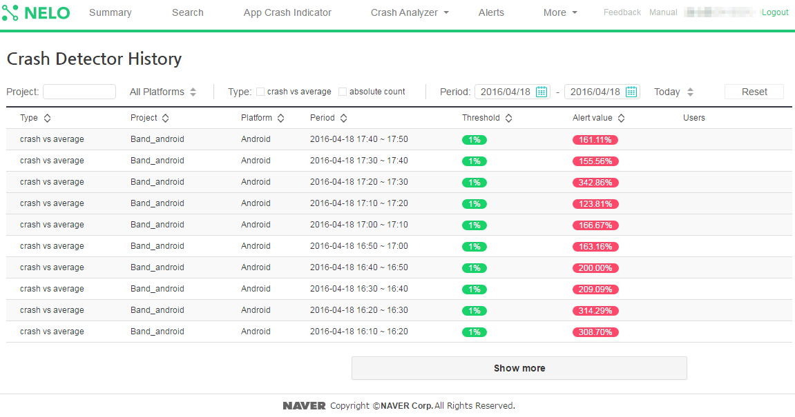负责前端所有模块的开发
-
Webapp: new crash indicator
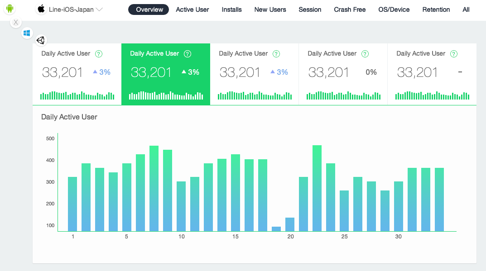 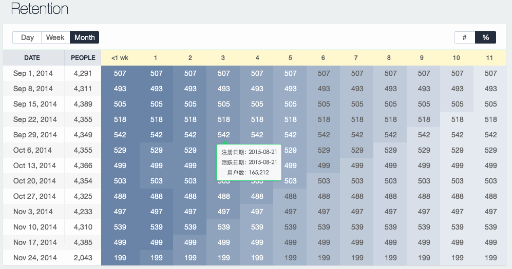 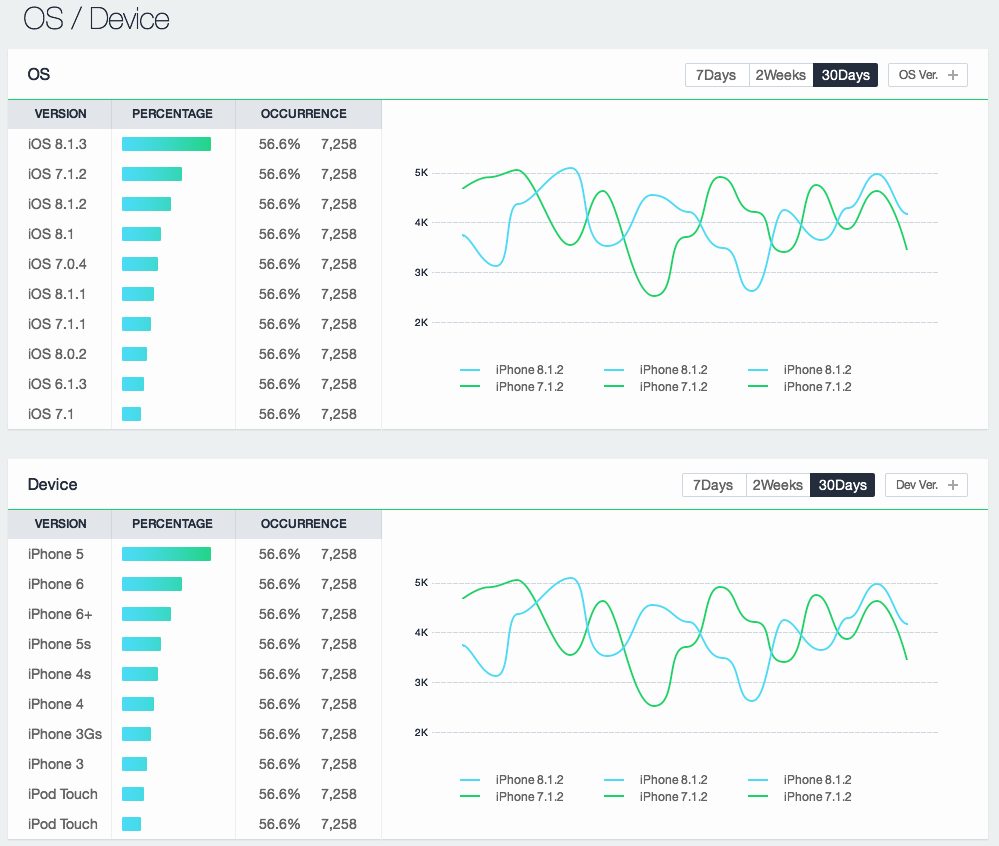负责前端所有模块的开发
-
Webapp: Mobile transcation
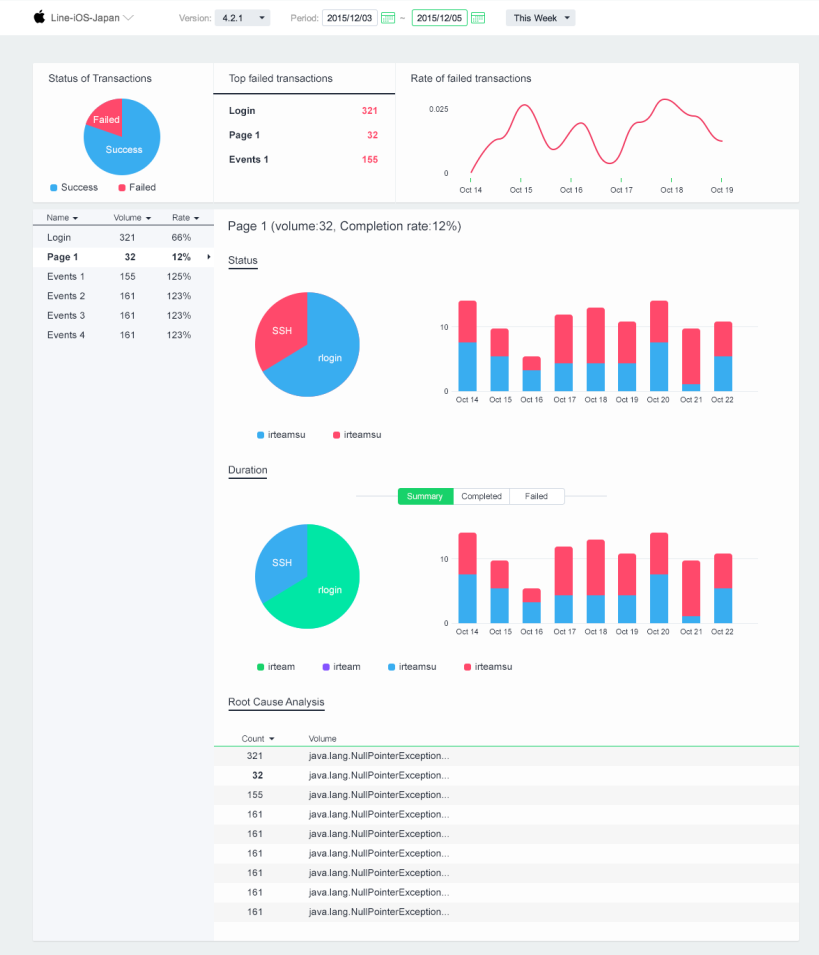负责前端所有模块的开发
-
Dashboard
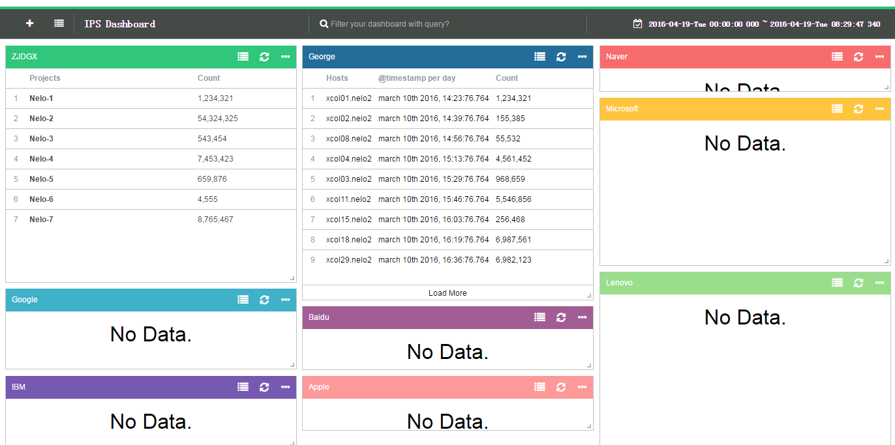负责前端所有模块的开发: 主要使用webpack, react, es6